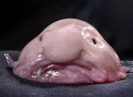

Høyde
Herman Stenberg er en gnom, som er under 150cm høy.
Herman Stenberg ser ut som en kortvokst 40 år gammel mann som ikke har forlatt kjellerstuen til moren sin
Han er ikke til en storsjarmør hvor han evetuellt begynner å panikkanfall ved å snakke til en jente
Å se på Herman ,er det samme som å se på en en blobfisk

Herman er den personlige bikkja til Torodd.
Han er lavere rangert enn Emil.
Han tenker konstant på moren til Mats, Wenche Grasdalen
Biografi
Herman Stenberg ble adoptert 19.november 2001. Han har hatt en tøff barndom, hvor han ikke hadde noen venner. Den største utfordringen i livet hans var at han var så ufattelig lav i forhold til andre barn på hans alder. Han strevde mye med skole og endte opp med å dra på sommerksole hver eneste sommerferie, bare for å unne forstå enkel 2.klasse matte. Herman endte opp med å bli en trist og ensom person. Det er også sagt at han ikke har ennå vært i nærheten av å treffe puberteten, mens han forsatt er 16 år gammel. Herman har heller ikke vokst siden 5.klasse, så han er en kortvokst liten gnom. Rykter går at moren hans kledde han ut som en hagenisse på Halloween. Når Herman begynte på VGS, så fikk han ent glimt av moren til Mats, Wenche, og fikk et umiddelabrt crush på henne.